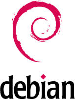

m23 is based on Debian GNU/Linux www.debian.org, a free Linux distribution. Debian GNU/Linux is used for the m23 clients, too. We have payed attention to transparency of all procedures and license free clients and servers during development! Debian offers about 25.000 software packages that can be downloaded from the internet and installed on any client you want.
dodger
2014-01-22